9.12 オンラインライブ、たくさんの方に見ていただきありがとうございました。アーカイブは ΛLLY SIDE から見られます。
VΛNT OFFICIAL
DANCE / TRAINING / TALK / MUSIC / AND YOU. 違うまま揃うのが、VΛNT。
SAME DREAM. DIFFERENT VIBES.
WE ARE VΛNT.
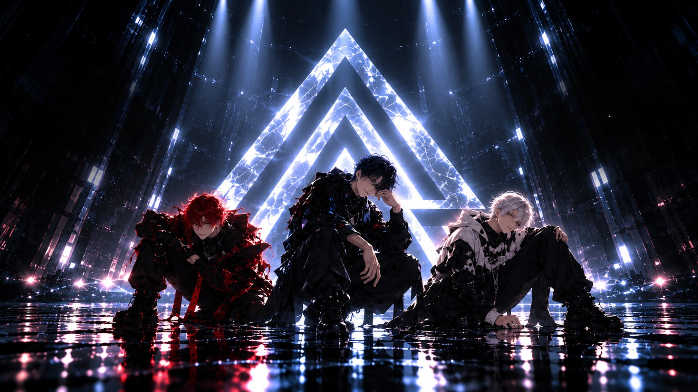
▶4:26VΛNT - More Than Dance. | Official MV
128万 回視聴 ‧ 1 か月前踊って、鍛えて、語り合う。
ここで、また会おう。
同じ振りを踊る。それでも、こんなに違う。
違うまま揃うのが、VΛNT。
最新の動画
▶ すべて再生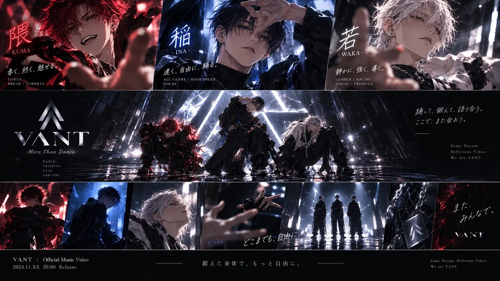
18:24VΛNT | BACKSTAGE #12楽屋トーク / ライブ翌日12万 回視聴 ‧ 2 日前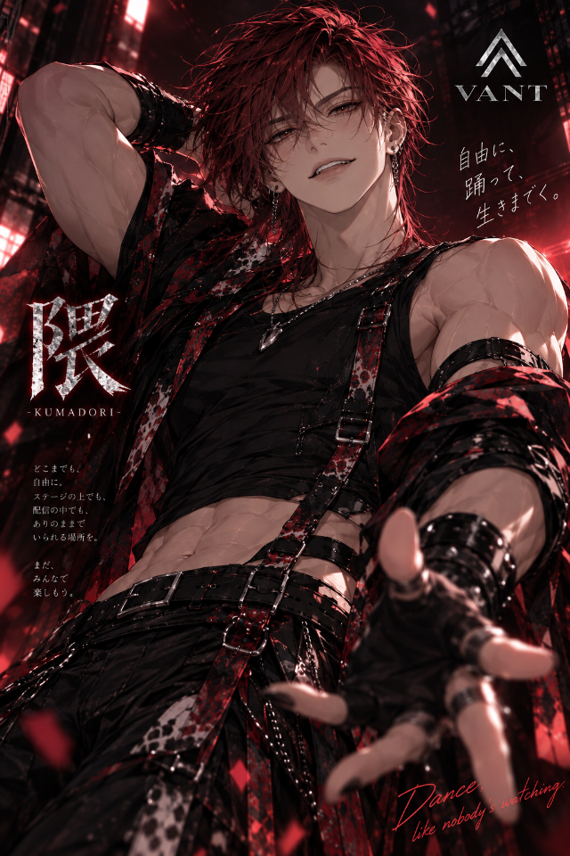
12:18隈 -KUMA- | BREAK TRAINING限界の、その先へ。21万 回視聴 ‧ 4 日前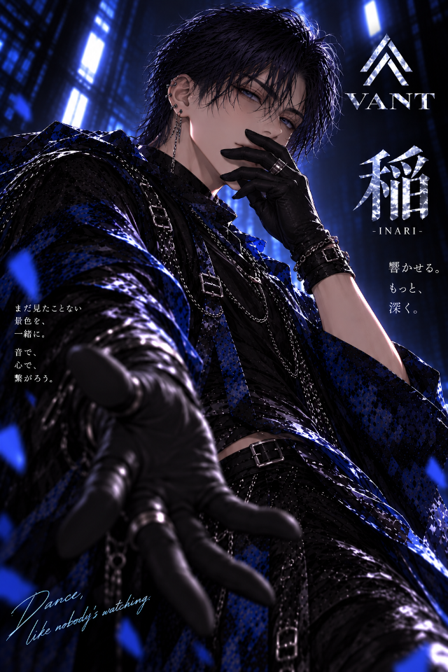
10:32稲 -INA- | SPEED DANCE速く、自由に。19万 回視聴 ‧ 5 日前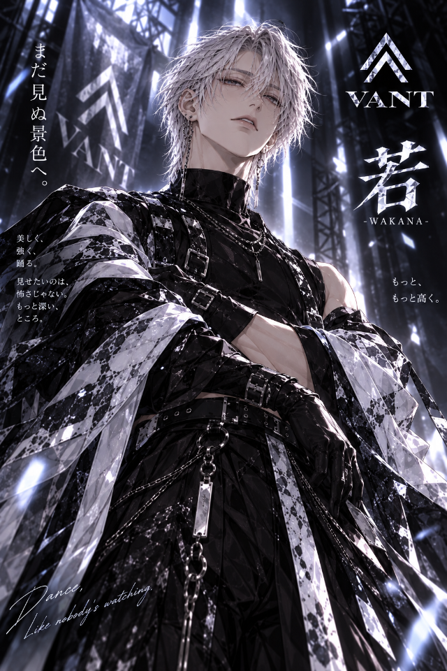
11:03若 -WAKA- | KRUMP SESSION静かに、強く。28万 回視聴 ‧ 7 日前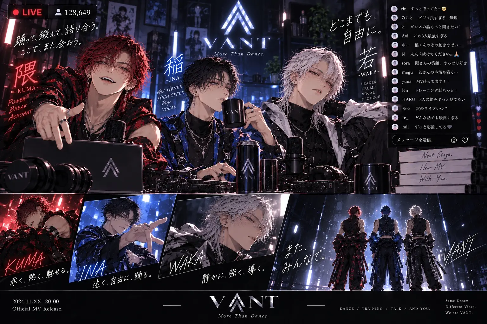
22:17VΛNT | 3MAN TALK3人で語る。これからのこと。36万 回視聴 ‧ 10 日前 22:17VΛNT | GAME NIGHTゲーム、雑談、そして…14万 回視聴 ‧ 12 日前
22:17VΛNT | GAME NIGHTゲーム、雑談、そして…14万 回視聴 ‧ 12 日前ダンスパフォーマンス
▶ すべて再生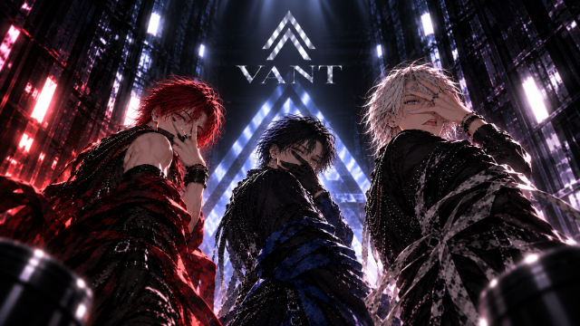
6:12VΛNT | ORIGINAL CHOREOGRAPHYSame Move, Different Vibes.45万 回視聴 ‧ 3 週間前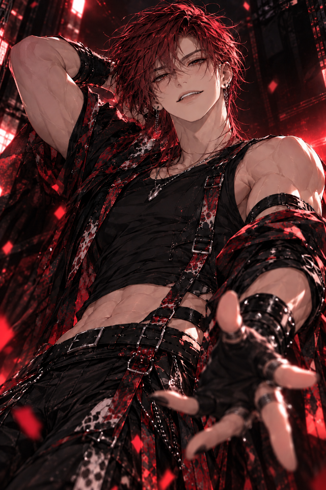
4:06KUMA | BREAK SOLOKUMA | Break Solo31万 回視聴 ‧ 4 週間前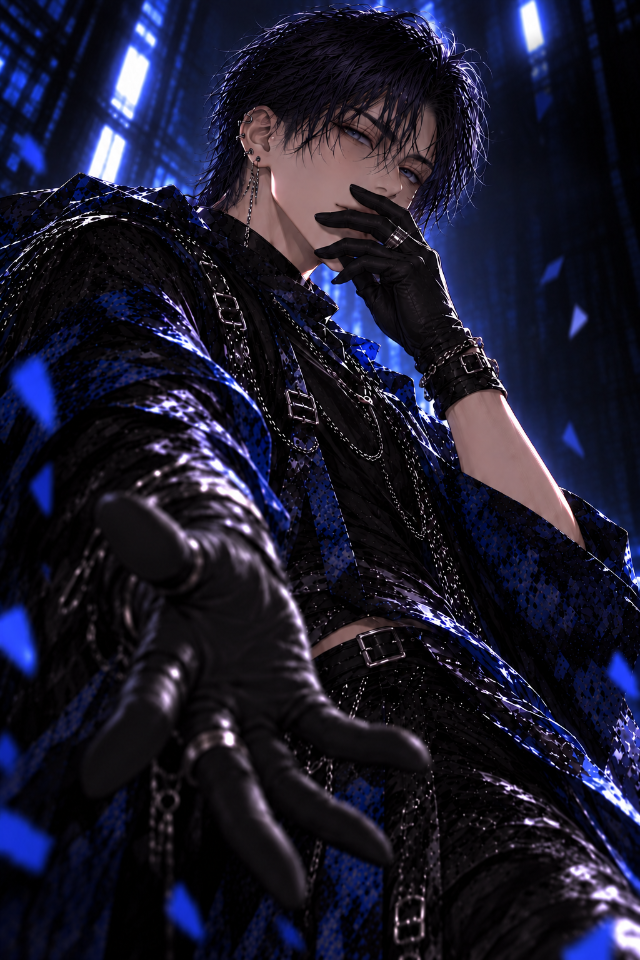
3:52INA | POP SOLOINA | Pop Solo29万 回視聴 ‧ 3 週間前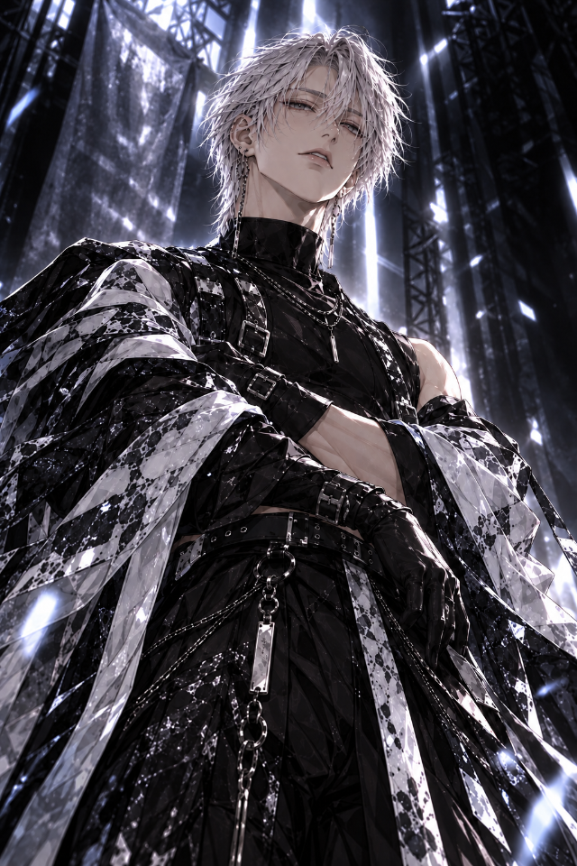
4:21WAKA | KRUMP SOLOWAKA | Krump33万 回視聴 ‧ 4 週間前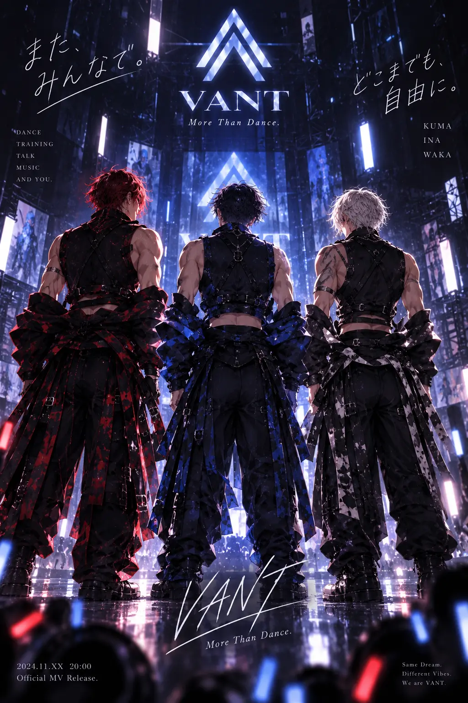
6:15VΛNT | DANCE PRACTICEPractice Session27万 回視聴 ‧ 3 週間前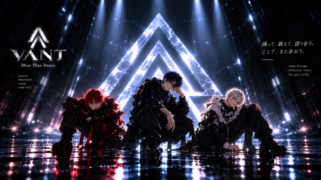
8:03VΛNT | STAGE MIXStage Mix41万 回視聴 ‧ 3 週間前トーク / ライブ配信
▶ すべて再生ショート
▶ すべて再生投稿
新しいショートを公開しました。今回は3人それぞれのソロです。どれが好きかコメントで教えてください。

オリジナル楽曲、配信スタートしました。SUNO で聴けます。
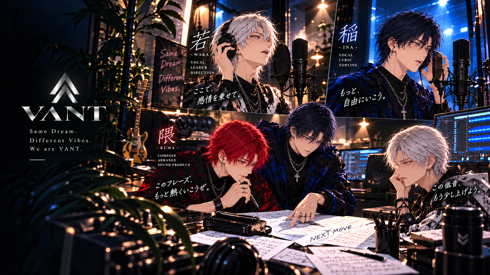